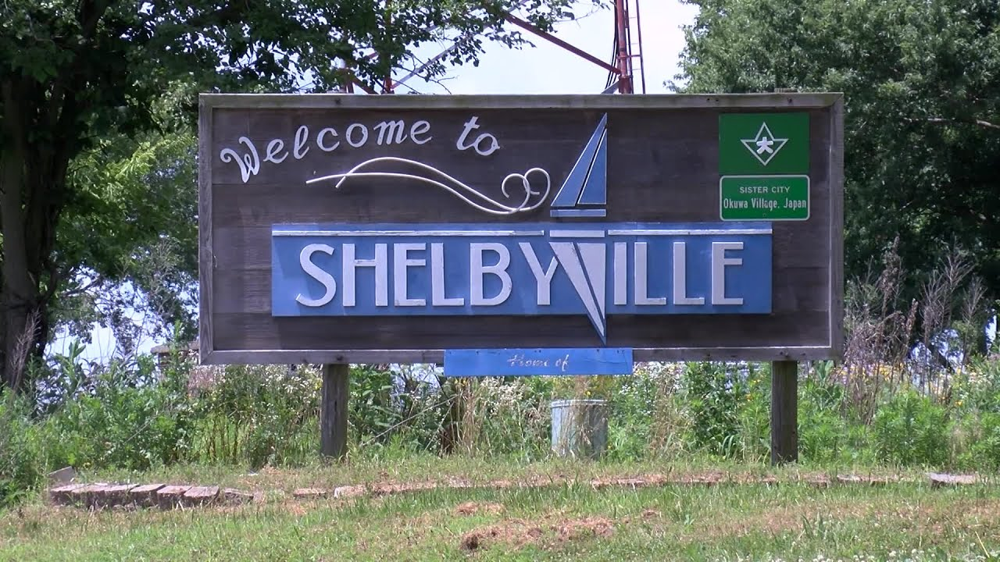
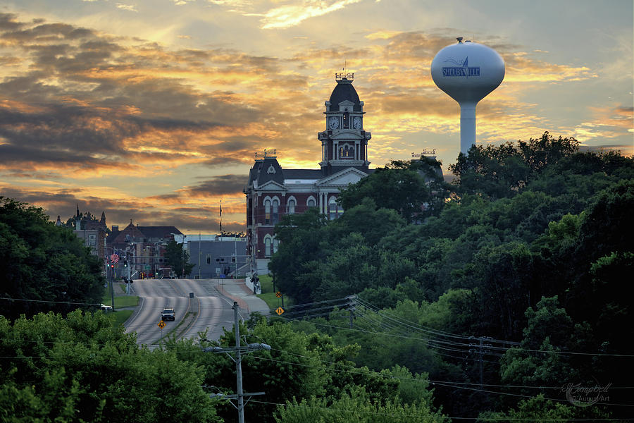
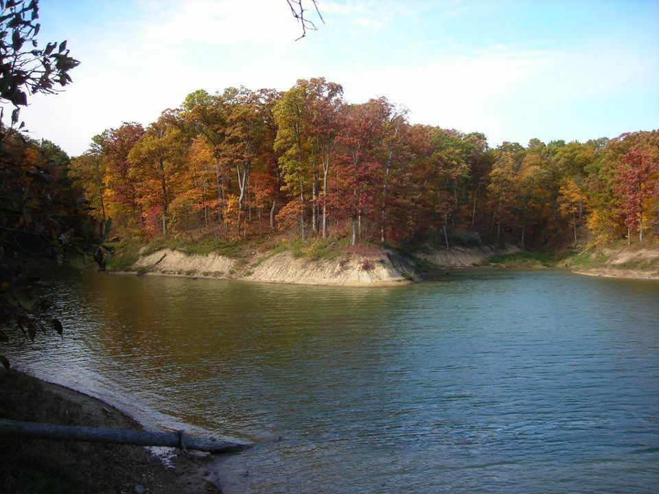

<html lang="en">
<head>
    <meta charset="UTF-8">
    <meta http-equiv="X-UA-Compatible" content="IE=edge">
    <meta name="viewport" content="width=device-width, initial-scale=1.0">
    <title>Document</title>

<link rel="stylesheet" href="mmportfoliopage2.css">

</head>
<body>
    
    
</body>


<html lang="en">
<head>
    <meta charset="UTF-8">
    <meta http-equiv="X-UA-Compatible" content="IE=edge">
    <meta name="viewport" content="width=device-width, initial-scale=1.0">
    <title>Document</title>
</head>
<body>

</body>
</html>
    <div id="wrapper"></div>
    <header>
        <h1>About Me</h1>
        <nav>
        <ul>
          <li><a href="mmportfoliopage1.html" target="_blank">Home</a></li>
          <li><a href="mmportfoliopage2.html" target="_blank">About Me</a></li>
          <li><a href="mmportfoliopage3.html" target="_blank">Projects</a></li>
        </ul>
        </nav>
        <aside>
            <h2>Information:</h2>


        <P class="customtext1"> Hello, my name is Mason Miller. I am currently a freshman majoring in Creative Technologies, at Illinois State University. Throughout the course of my Freshman year I have learned many different skills, and attributes that have expanded my creative skill set. In the first semester I was able to take a basic level CTK class that opened my mind more than any class I had ever taken before. And in the second semester of my Freshman year I was able to take a drawing class. I would never consider myself an artist, but by trusting the process I was able to create art that I could be proud of. I was also able to take a CTK 301, a web design class. I came in knowing absolutely nothing about building websites, but I was interested in it and with the help of Rick Valentin I learned about the world of web design. </P>

        <p class="customtext1">I was born and raised in a small, rural town in central/ southern Illinois. Shelbyville is a town of only 5,000 people but it is a great place to grow because you're surrounded by hard working people. Sports were my whole life growing up. I loved to play baseball, Basketball, and football but my true love was always baseball, I still never miss a cardinals game. I attended Shelbyville High School where I met a lot of good friends, and people I would be attached to forever. I still enjoy going on Lake Shelbyville every summer, and cruising around town with my friends. Now that my baseball career is over I began the hobby of bowling. Bowling is my new escape from reality like baseball was, which is something everybody needs to relax and unwind. But bowling keeps my competitive edge sharp, I love to compete and play sports and bowling gives me that outlet still.</p>
        </aside>

        

        

        


   </footer>
    </div>
    </body>
   </html>